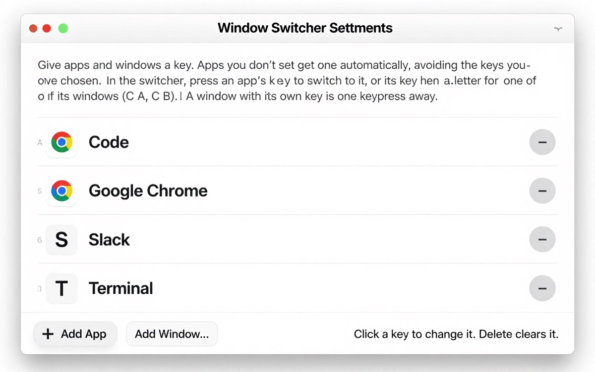
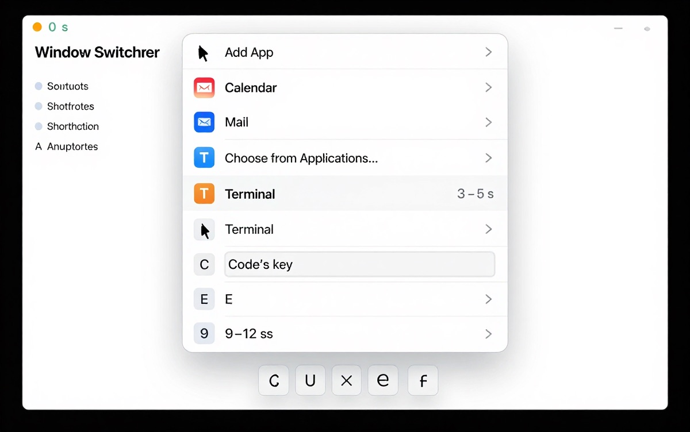
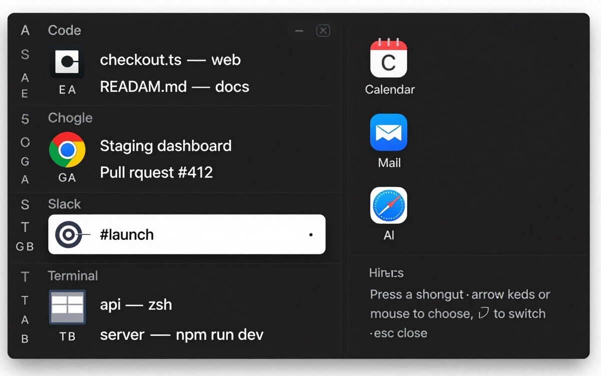
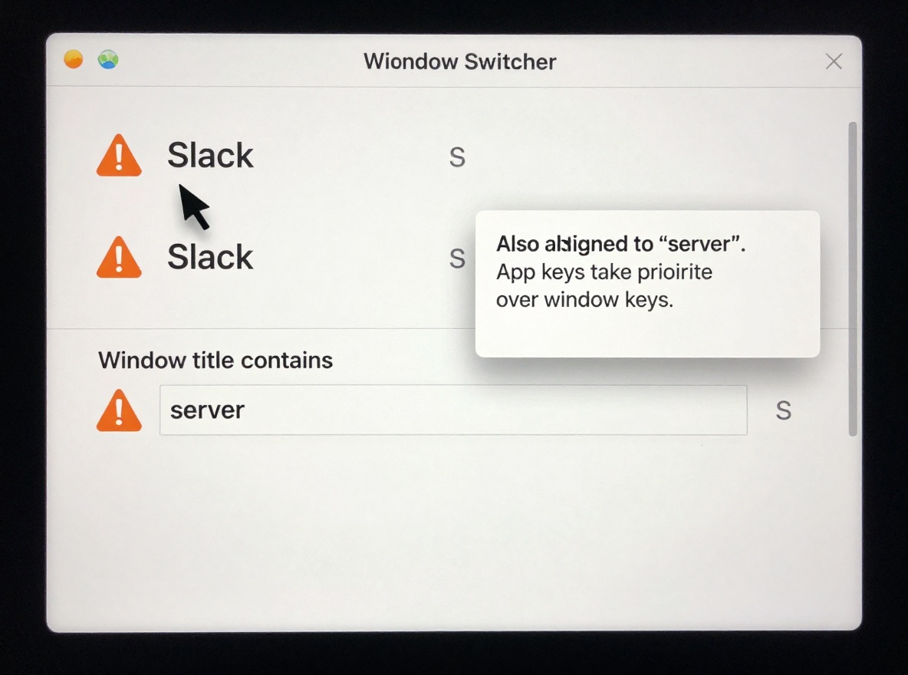

Features / Your own keys
Your own keysPick the keys for the apps you live in.
Want Terminal on T and Xcode on X? Add them in Settings and press the key you want. Your apps go to the top of the switcher, and no other app can take their keys.
● Set them once, use them forever

AI draft · replaceTwo clicks and a keypress.
Open Settings → Shortcuts and click Add App. Your running apps are right there in the menu. For anything else, pick "Choose from Applications…".
- It starts with a sensible key. A new app gets the first free letter of its name.
- Click the key to change it. Press the key you want and it's saved. Delete clears it.
- One key, no modifiers. Inside the switcher you just press T, not ⌘T.

AI draft · replaceYour apps at the top, every time.
The switcher lists the apps you've set before everything else, in A to Z order. The apps you use most are where your eyes land first.
- Automatic keys move aside. Any other app that had your key picks a new one.
- They launch, too. Press an app's key when it isn't running and it opens. More on that →
- Windows get letters after it. When an app has several windows, it's your key, then A, B, C.

AI draft · replaceSettings tells you when two things share a key.
If an app and a window have the same key, an orange warning appears next to both. Hover over it to see who else has that key.
App keys win over window keys, so nothing breaks while you decide. Tab, Esc, Return, Delete and the arrows move you around the switcher, so Settings won't let you pick them.

AI draft · replaceSettings that change it.
In Settings → Shortcuts and Settings → General.
Good to know.
Do I have to set keys for every app?
No. Every app already gets an automatic key. Set your own only for the ones you want on a particular key. How automatic keys work →
Can I use numbers or other keys?
Yes. Any single key works, digits included, except Tab, Esc, Return, Delete and the arrows. Those move you around the switcher.
Does the key work outside the switcher?
No, and that's on purpose. Keys are only read while the switcher is open, so they never get in the way of typing. Press ⌥⇥, then the key.
How do I remove an app?
Click the minus button at the end of its row in Settings → Shortcuts. Any window keys you set for it go too. The app goes back to an automatic key.
Press ⌥⇥. Then the next key you want.
Free for the Mac. No account, nothing running in the background, and every app has a key the moment it's installed.
Download Window Switcher for Mac